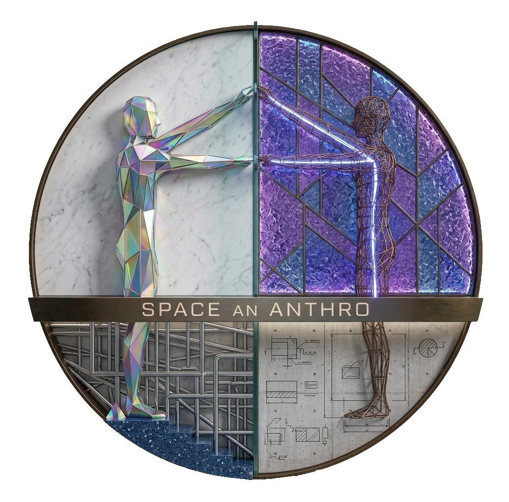

ARCHITECTS | INTERIORS
SAA CONSTRUCTIONS is a multidisciplinary architecture, interior design, and construction firm established in 2018 with a commitment to delivering innovative, functional, and high-quality spaces. We specialize in architectural planning, residential and commercial construction, interior design, and turnkey project execution, ensuring excellence at every stage from concept to completion. Over the years, we have successfully completed 131+ turnkey projects and produced more than 300 architectural drawings, earning the trust of our clients through quality workmanship, timely delivery, and attention to detail. At SAA CONSTRUCTIONS, we transform ideas into enduring spaces that reflect creativity, functionality, and lasting value.
Established
Turnkey Projects
Architectural Drawings